Bitterroot Valley, MT · Custom New Build
This project started with a small guest cabin and grew into a full custom home on Sunset Bench Road. The client wanted a genuine shabby-chic, old-world feel, so almost all of the wood — beams, siding, flooring, cabinetry — is reclaimed lumber roughly 200 years old, most of it Peroba rosa and Peroba decompo hardwood sourced from Brazil. Rather than running it through a circular or band saw, it was hand-cut in a saw pit the old way, which keeps the tool marks and grain looking the way they would have a century or two ago.
Most of the hardware throughout the house is old or reclaimed as well, right down to the door latches and hinges. We also hand-built the dining table and the bench that gives the property its name — a solid piece of custom furniture built in the shop to match the house. The finished home has since sold, and the twilight and kitchen photos here were taken by the listing realtor before the sale.
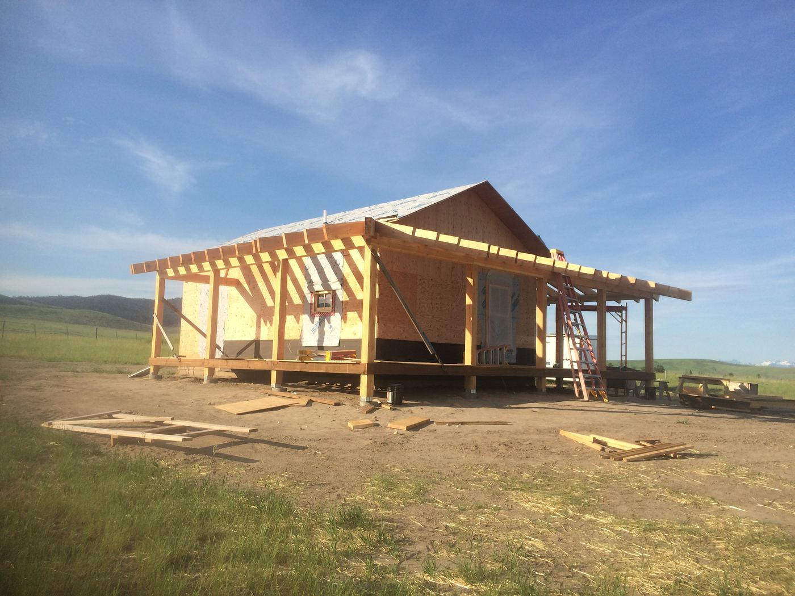
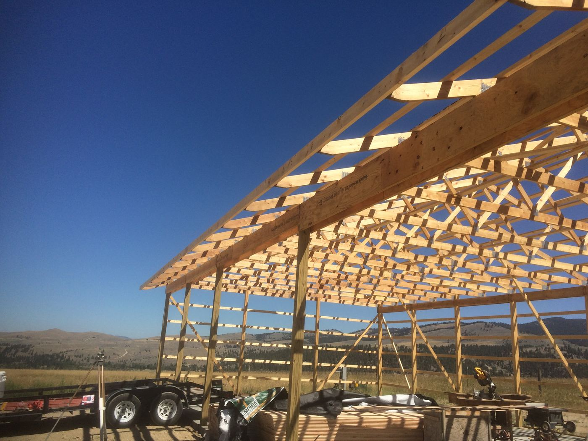
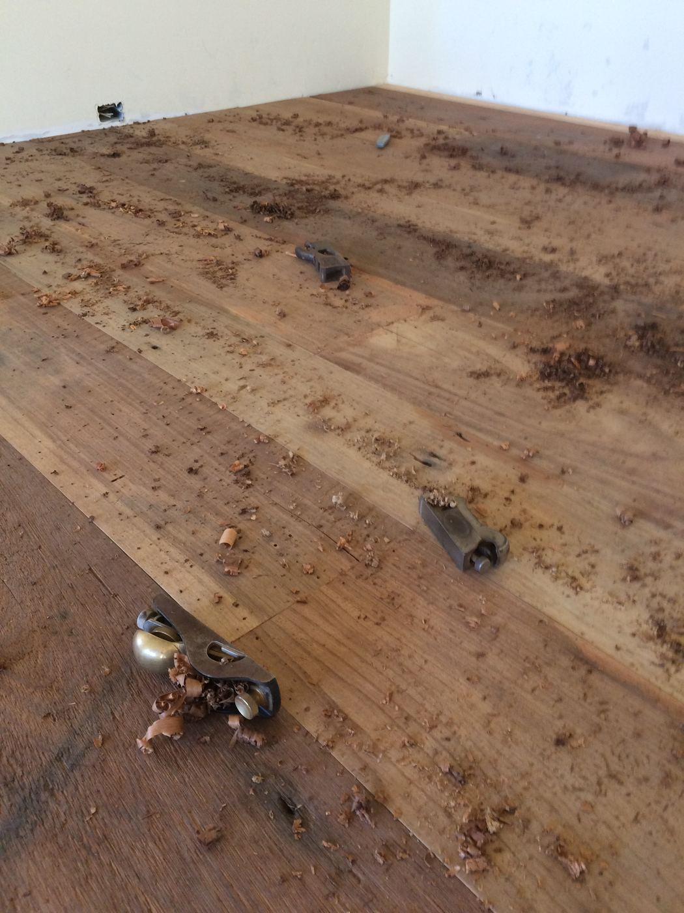
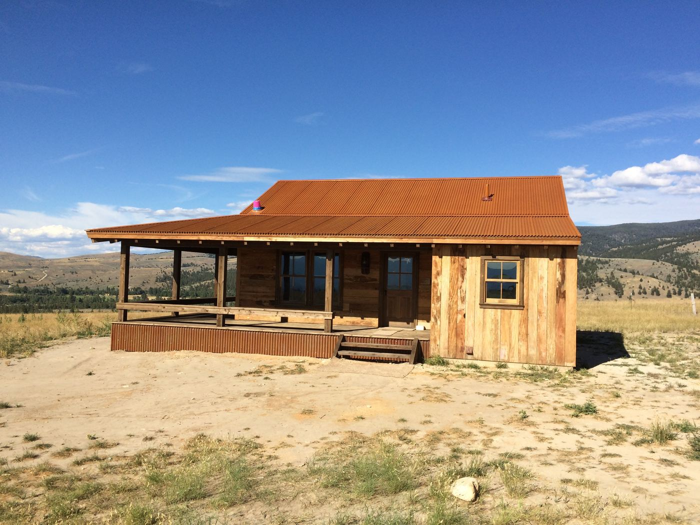
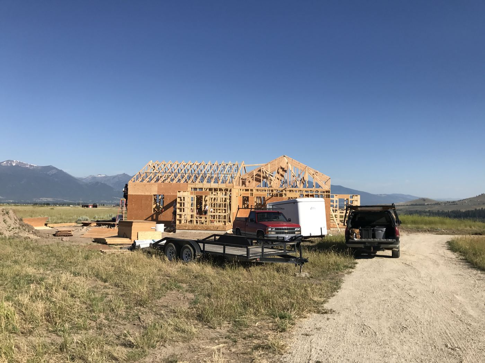
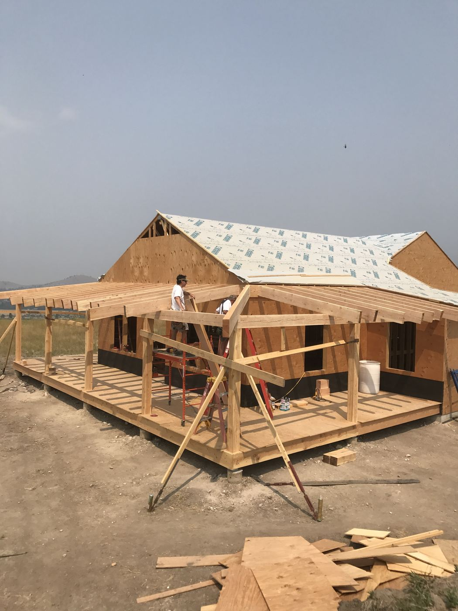
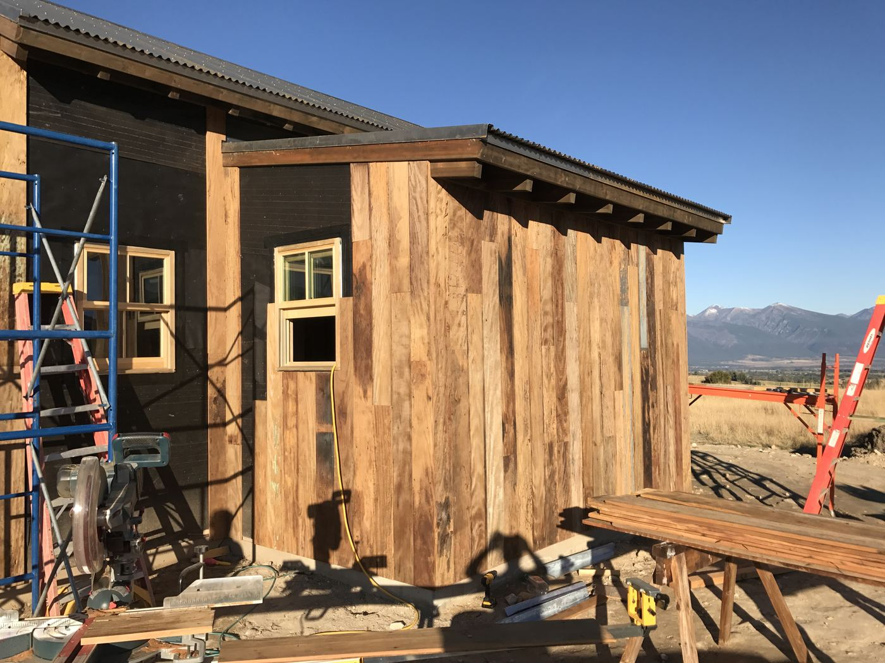
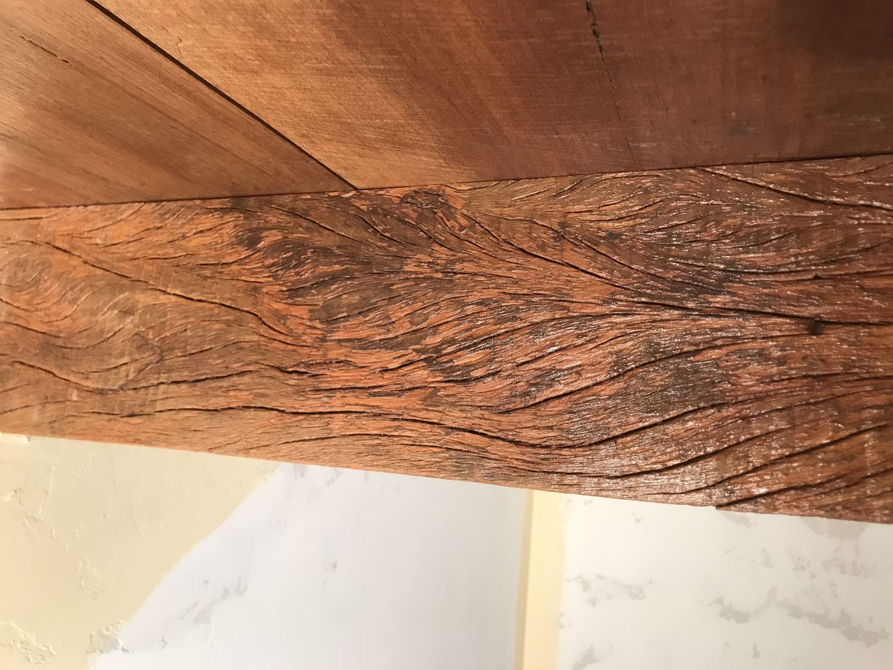
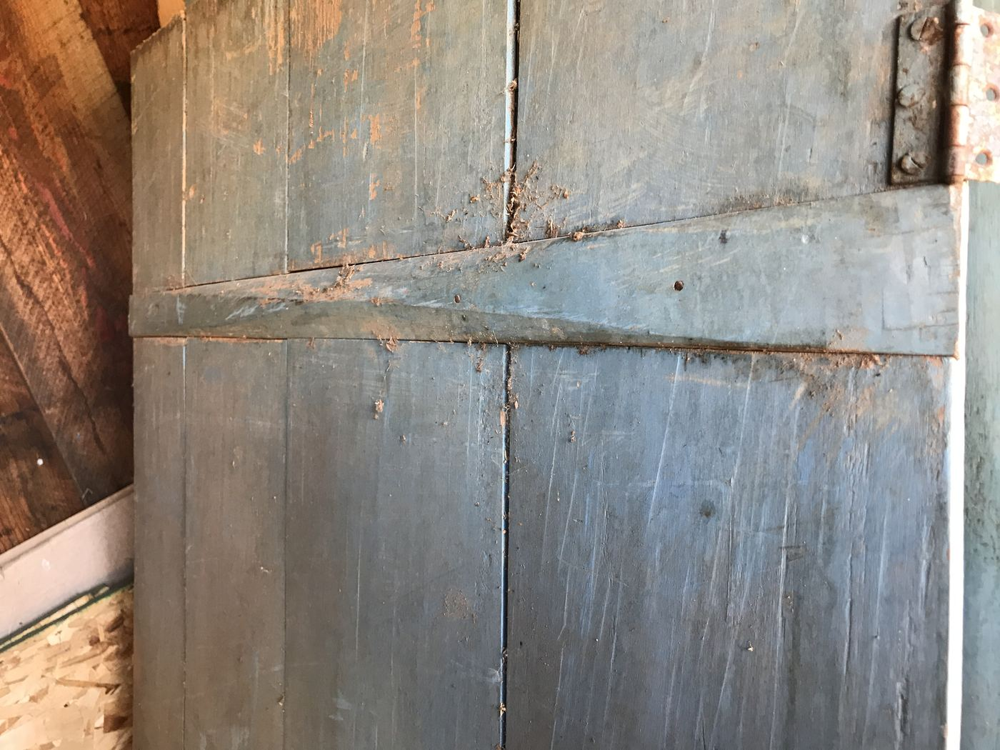
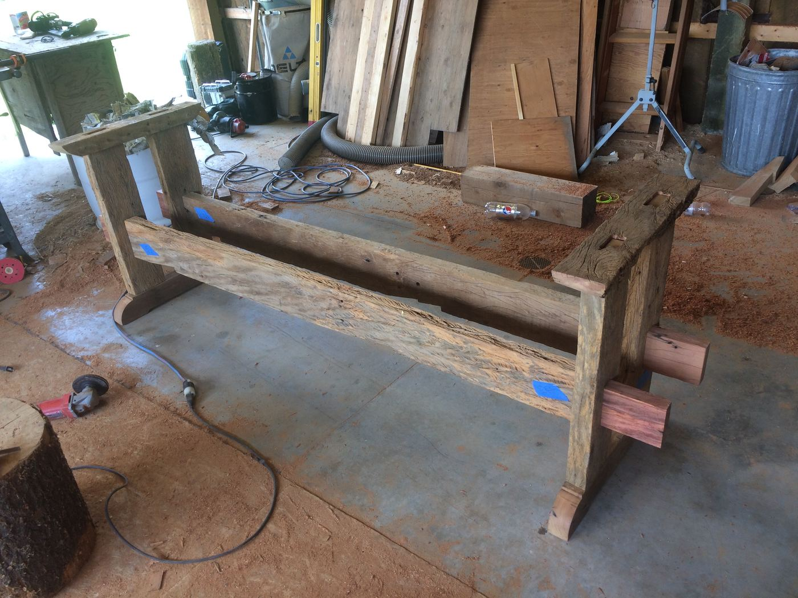
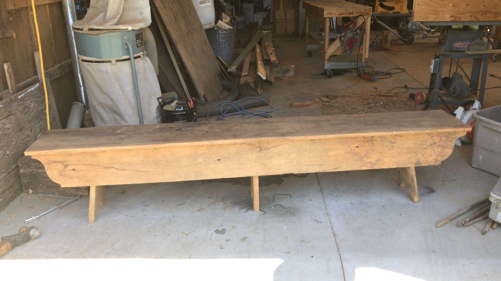
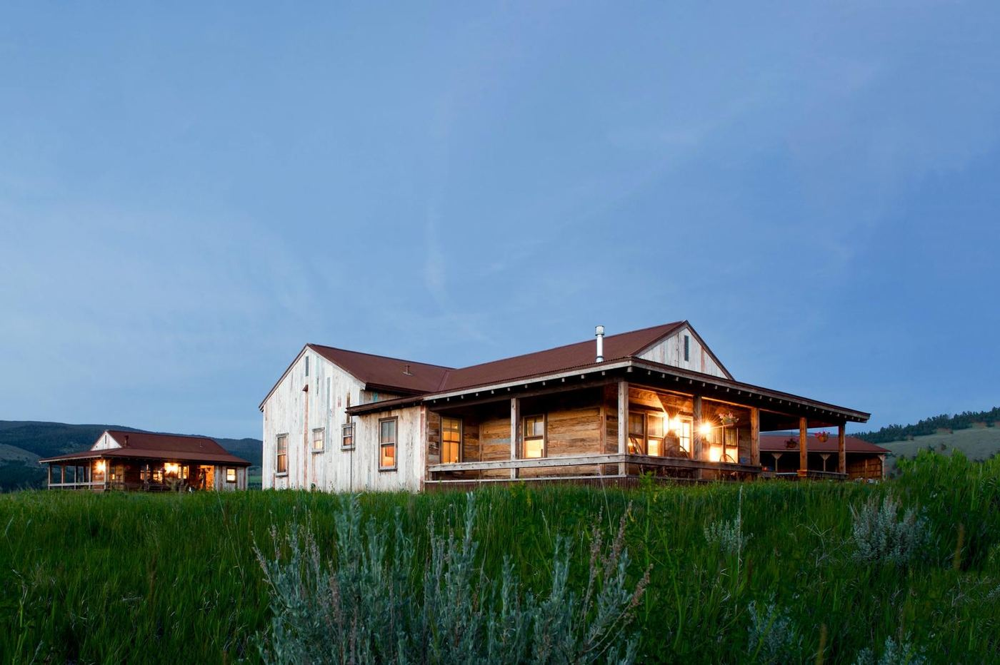
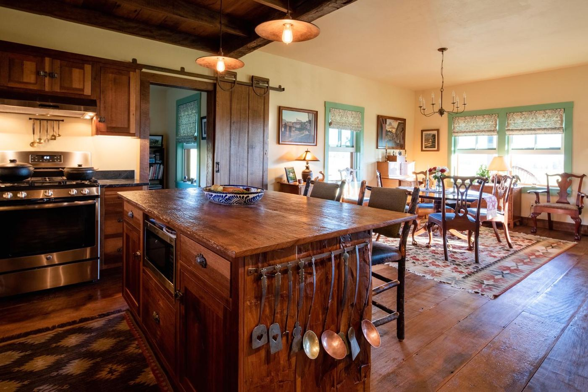